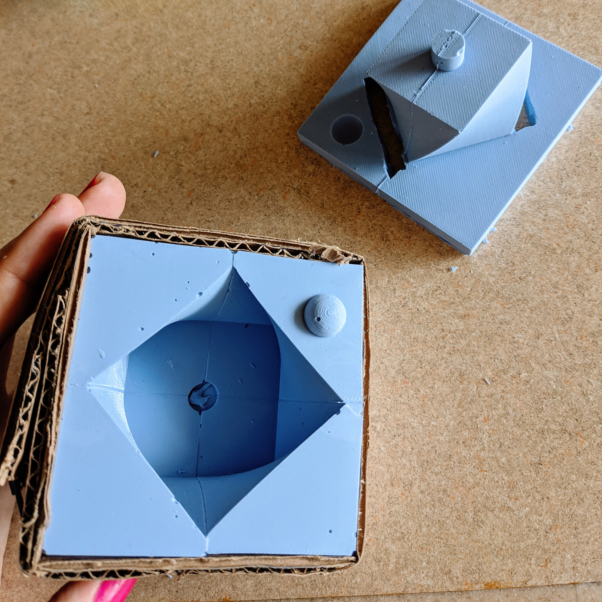
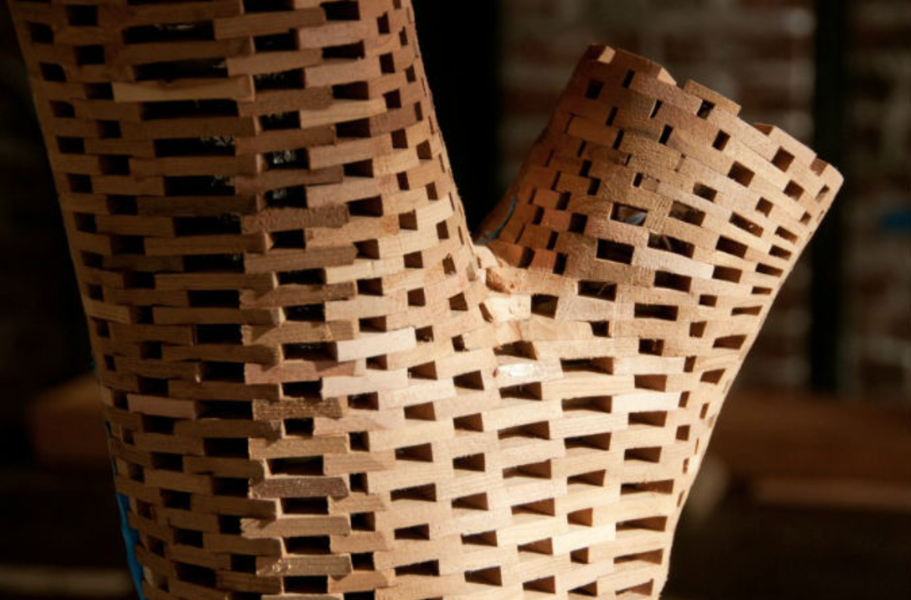
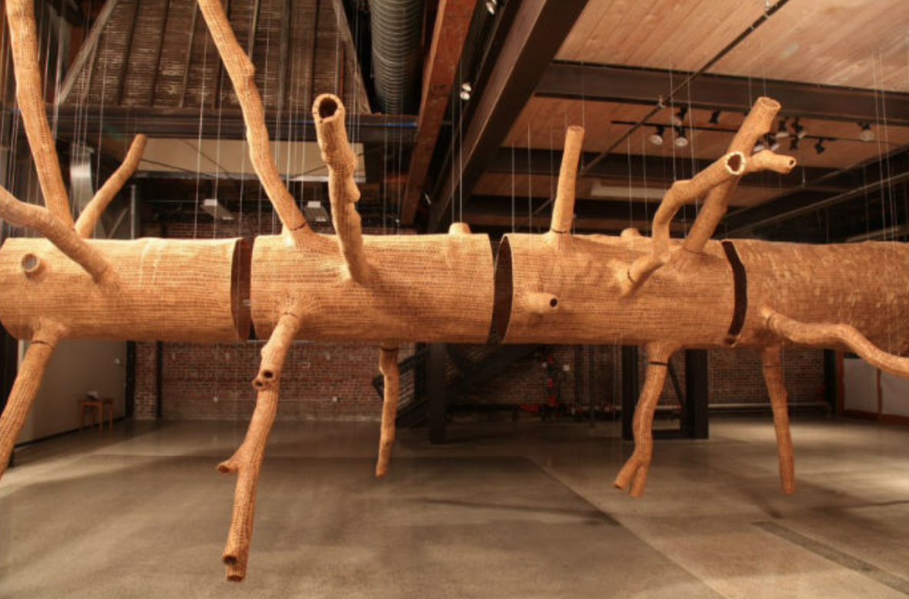
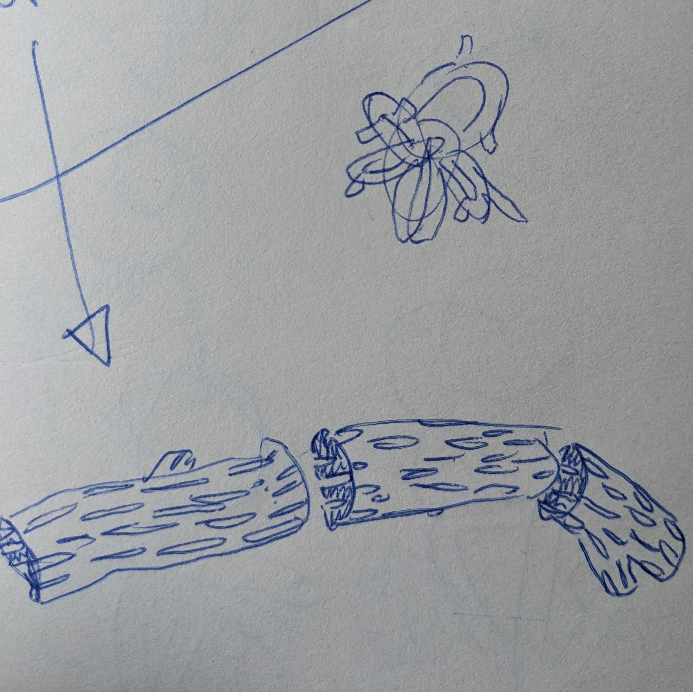

This week I created and cast my molds and put together a plan for my ~fInAL pRoJEcT~. You can find files related to my mold project here . You can read more below about my mold making adventures and the plan of attack for my final project.
I found another great grasshopper tutorial that ended up helping me make my twisted cube shape: This tutorial is actually by the same guy who did the voronoi cell tutorial! I recommend his stuff. I made a grasshopper definition that allowed me to make and customize twisted cubes and rectangles. I tried writing the definition that also subtracted out the pot’s center, but I after several tries I was cutting it close time-wise and decided to just baked the base polysurface and used boolean difference in Rhino.

From that shape, I created a mold and a mold-for-molds using various combos of bool union and bool differences. I split my mold-for-molds in half to make extraction of my mold easier. At the time, I was worried that this would cause leaks or deformations in my mold. (I later learned that in actuality, merely splitting my mold-for-molds in half was not nearly enough for easy extraction).

Finally, my mold-for-molds went to print! It took 1 day and 9 hours (holy cow). I was feeling nervous: with such a long print time, I would not have time to make another mold-for-molds if this didn’t work.
Sure enough, the split mold-for-molds didn’t print entirely square. I rubber banded the crap out of it to hold the pieces tightly together, making as flush a connection as I could.

I mixed the oomoo in equal parts- taking care to prepare my work station. After Nadya’s lecture, I was prepared for a sloppy process. I still made a mess. The oomoo stuck to everything, like some sort of space goop. I’m glad I was as prepared as I was!
Even with my split mold-for-molds, I had a tough time extracting the twisted base of my mold. The lid lifted straight out of the mold- but the bases twisted around themselves a bit. Another issue was that the molds were connected to each other- maneuvering one silicone cast affected the positioning of the other, making tears more likely. I used dish soap to help work the molds out, but still one ripped.

Next time, I’d split the mold-for-molds in a different way to make the mold easier to extract. I’ll also split up my molds into separate pieces for each part, rather than casting them all into one mold, so I don’t compromise the other mold parts while extracting another.
Finally it’s time to cast my succulent pots! I started with a plain plaster cast:

Then I experimented with some “cast in place” surfaces: pennies, seaglass, bits of terracotta pots, and different colored broken pieces of plaster. I sanded the pieces with superfine sandpaper, using water to cut down on the dust. I would have liked smaller pieces of seaglass to get more consistent coverage.
Some of the plaster molds had bubbles in them, but I kind of liked the rustic effect it had next to the “cast in place” terra cotta.
I didn’t have any succulents, but I did have some of these adorable succulent tea candles around the house. When I lit them, I was really happy with how the light interacted with the angles of my shapes.


I tried mixing plaster with some acrylic paint to color it, then made it a very watery mix to cast the plaster bits in plaster. I had to make it this way in order for the plaster to work it’s way down into the mold. But, this took FOREVER. It’s still not done curing- maybe it never will! Later, I’d like to try casting other objects in place to get different textures. I’d like to try casting around crumpled bits of aluminum foil to get a “geode-like” texture. I’d also like to test different finishes on the pots to give them a glazed, shiny look. I’m also a fan of the matte finish- but it could be cool to see how a sheen would work.
For my final project, I'm building off of work I did for the lamp project. I was inspired by John Grade's "Middle Fork" piece- now on display at the SAM. I'm drawn to the intersection of geometric and organic shapes, and wanted to incorporate that into my lamp. I also thought it'd be an excellent opportunity to work modularly with my printer(to avoid long prints and sizing limits from the printer).



In my lamp project, I already worked some with applying geometric patterns to a surface. I want to push this in my final project.

I want to push that progress forward by applying a more specific geometric structure to the light’s surface (see sketches below). I’d also like to make different pieces with different curved angles so the lamp can be customizable- a sort of “build your own” light piece.



I plan to suspend an LED rope light through the center of the light piece, so the light moves however you construct your lamp. It should be easy to take apart and put together in a new composition!
Contingency Plans: if the curved tubes are too difficult to print, I plan on adjusting the design to look more like a winding piece of driftwood to avoid printing hollow curves.
Contingency Plans: If I can’t get the texture that I like, I can work more in the Voronoi Cells to achieve the desired effect. I plan on exploring several methods of connecting the modular pieces and suspending the LED rope light, including making a silicone mold of certain pieces. If none of these work, I can order hardware online to design my 3D print around
Contingency Plans: If I run out of time making the prints, I’ll just make a smaller kit! It’d still be cool to design with 5 pieces. That’s the beauty of it being modular.
I’m estimating a day to pit the fixture together and document it
Wish me luck~